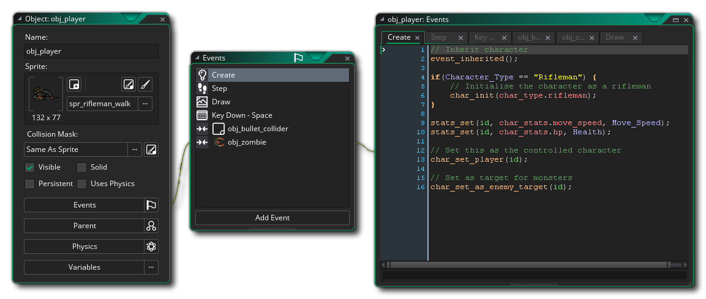

Avec les ressources que vous avez vues jusqu'à présent, vous pouvez ajouter de belles images et des sons à l'arbre de ressources du jeu, mais ils ne font rien dans le jeu pour le moment! Pour cela nous avons besoin de la ressource la plus importante de GameMaker Studio 2, la ressource Object. Les objets sont une ressource spéciale que nous utilisons pour contrôler les aspects d'un jeu et pour faire des choses spécifiques. La plupart du temps, ils ont un sprite qui leur est associé afin que vous puissiez les voir dans les salles de jeu, mais parfois ils sont utilisés comme un contrôleur «en coulisse» pour faire des choses liées à l'utilisateur ou pour le timing, etc... On peut leur donner des comportements et ils peuvent réagir à certains événements ainsi qu'à d'autres, et la plupart des choses que vous voyez dans un jeu sont basées sur des objets et leurs interactions.
Pour créer une nouvelle ressource d'objet, c'est la même chose que pour toutes les autres ressources et vous avez simplement un clic droit  dans le dossier de ressources Objets et en sélectionnant Créer.
dans le dossier de ressources Objets et en sélectionnant Créer. 
Ceci est la fenêtre de l'éditeur d'objets et montre les propriétés actuelles, et la première chose que vous devriez faire est de nommer l'objet, en utilisant encore un préfixe comme "obj_" ou un autre identifiant. En général, ou un objet pour dessiner quelque chose et enregistrer des collisions avec des instances d'autres objets, il doit avoir un sprite qui est ajouté en utilisant le  bouton. Cela ouvrira l' Explorateur d'actifs dans lequel vous pouvez sélectionner l'image-objet à utiliser:
bouton. Cela ouvrira l' Explorateur d'actifs dans lequel vous pouvez sélectionner l'image-objet à utiliser: 
Si vous n'avez pas encore de sprite approprié, vous pouvez cliquer sur  sur le bouton Nouveau Sprite
sur le bouton Nouveau Sprite  pour créer une nouvelle ressource d'image-objet et l'éditer comme vous le souhaitez, comme si vous aviez créé la ressource via les options de création de ressource standard, seulement maintenant elle sera automatiquement affectée à l'objet que vous avez ouvert lorsque vous avez commencé à le créer. Une fois que vous sélectionnez une ressource, vous pouvez également cliquer sur
pour créer une nouvelle ressource d'image-objet et l'éditer comme vous le souhaitez, comme si vous aviez créé la ressource via les options de création de ressource standard, seulement maintenant elle sera automatiquement affectée à l'objet que vous avez ouvert lorsque vous avez commencé à le créer. Une fois que vous sélectionnez une ressource, vous pouvez également cliquer sur  sur le Sprite Edit
sur le Sprite Edit  ou Modifier l'image boutons pour modifier l'image elle-même ou la ressource d'image-objet. Cela peut être plus rapide que d'abord trouver la ressource dans la liste des ressources, puis indiquer que vous souhaitez l'éditer.
ou Modifier l'image boutons pour modifier l'image elle-même ou la ressource d'image-objet. Cela peut être plus rapide que d'abord trouver la ressource dans la liste des ressources, puis indiquer que vous souhaitez l'éditer.
Une fois que vous avez sélectionné l'image-objet, vous pouvez modifier d'autres propriétés, comme par exemple si elle doit être visible ou non, ou quel type de masque de collision elle devrait avoir. Pour les jeux simples, vous n'avez probablement pas besoin de changer quelque chose ici et vous pouvez maintenant ajouter des événements à l'objet. Fondamentalement, les événements sont des moments discrets dans la boucle du jeu où les choses se produisent en fonction de ce que vous avez programmé pour eux. GameMaker Studio 2 fonctionne avec des cycles de ces événements - à partir du moment où une salle est commencée, il y a une boucle de jeu où chaque étape (une étape est un moment dans le temps de jeu, régie par la vitesse de jeu). Des séries d'événements sont exécutées et vous pouvez choisir de placer du code ou des actions DnD™ dans vos instances qui répondent à ces événements.
Pour ajouter un événement, cliquez sur  sur le bouton Ajouter un événement:
sur le bouton Ajouter un événement: 
Ci-dessus vous pouvez voir toutes les différentes catégories d'événements, dont certaines contiennent d'autres sous-catégories. Nous ne passerons pas tous les événements ici, mais nous couvrirons brièvement les cinq plus importants:
 | Créer un évènement | Cet événement se produit lorsqu'une instance de l'objet est créée pour la première fois et est la toute première chose qui se produit dans une instance qui a été placée dans la pièce via l'éditeur de pièce lors de la saisie d'une pièce. Cela signifie que cet événement est l'endroit idéal pour initialiser des variables, démarrer des Timelines, définir des chemins etc... et faire n'importe quoi d'autre qui ne doit généralement être fait qu'une fois ou seulement lorsqu'une instance apparaît pour la première fois dans la pièce. |
 | Étape | GameMaker Studio 2 divise le temps de jeu en étapes avec la vitesse de jeu définissant combien de ces étapes il est censé être par seconde. Une étape, c'est la boucle qui court constamment avec tous les événements vérifiés et déclenchés comme nécessaire pendant que le jeu fonctionne, comme vous pouvez l'imaginer, l'événement d'étape est un événement qui est vérifié à chaque étape du jeu pendant que l'instance existe. Notez que la catégorie Step Event a trois sous-catégories pour "ajuster" le timing dans l'instance, mais en général, vous utiliserez le Step Event le plus important. |
 | Événement de collision | Évidemment, lorsque vous créez un jeu, il est très important que vous sachiez quand deux (ou plus) instances d'un objet sont entrées en collision, et pour cela nous avons l'événement de collision. C'est un événement que vous placez dans un objet, puis spécifiez avec quel autre objet vous devriez vérifier les collisions. Une fois que vous avez ajouté l'événement et choisi l'objet à vérifier, vous pouvez ajouter du code ou DnD™ pour résoudre la collision. |
| Dessiner un événement | Il y a plusieurs événements Draw différents dans la catégorie des événements draw, mais celui que vous utilisez le plus est celui qui se trouve en haut simplement appelé "Draw". Cet événement de tirage général sera calé, comme l'événement d'étape, à chaque image de jeu, mais il fonctionne de deux manières différentes. Le premier est lorsque vous n'ajoutez pas de code ou DnD™ à l'événement, auquel cas il sera « par défaut dessiner » l'image - objet attribué, en utilisant toutes les transformations qui ont été appliquées ailleurs dans l'objet (comme changer sa taille ou alpha mélange). La deuxième façon de procéder est lorsque vous ajoutez du code ou du DnD™. Ajouter quelque chose à l'événement indique à GameMaker Studio 2 "Je veux contrôler ce que vous dessinez pour les instances de cet objet" et cela GameMaker Studio 2 complètement le tirage par défaut. Cela signifie que vous pouvez affecter un objet avec une image-objet, puis définir l'événement draw pour dessiner du texte et l'image-objet ne sera pas dessinée car vous n'avez pas demandé à GameMaker Studio 2 de le dessiner. | |
 | Détruire l'événement | Cet événement est le dernier événement à être exécuté lorsqu'une instance est détruite. Il est souvent ignoré lors de l'ajout de comportements aux objets, mais il peut être très utile - par exemple, pour créer des explosions ou des effets de particules lorsqu'un ennemi est tué ou pour ré-engendrer une nouvelle instance de l'objet dans une autre partie de la pièce, ou même pour ajouter des points sur une partition. |
Pour plus d'informations sur tous les différents événements, s'il vous plaît voir ici.
L'ajout d'un événement ouvrira l'éditeur de code ou l'éditeur de glisser-déposer, selon le type de projet que vous créez. Dans cette fenêtre, vous pouvez maintenant ajouter le code ou les actions que vous souhaitez exécuter chaque fois que cet événement est déclenché dans la boucle de jeu. Un objet typique avec des événements et du code ressemblera à ceci: 
L'utilisation de DnD™ ou du code pour programmer le jeu ne fait pas partie de ce guide de base de démarrage rapide, mais vous pouvez trouver plus d'informations sur les deux pages suivantes:
Et vous pouvez trouver une explication complète de toutes les différentes parties de l' éditeur d'objets ici:
La prochaine partie de ce guide se penchera sur l' éditeur de salle, où tout ce que vous avez appris jusqu'ici se réunit pour faire de vos projets des jeux...